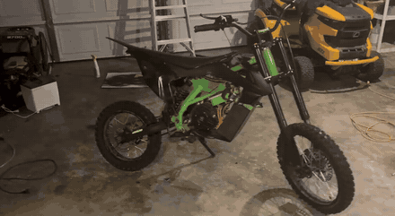
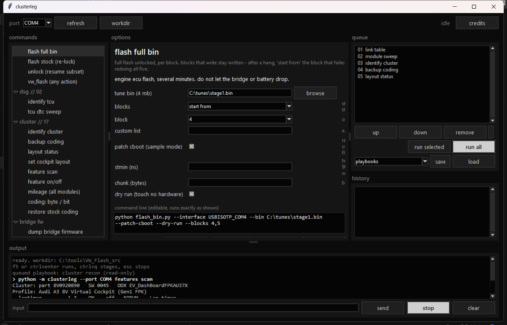
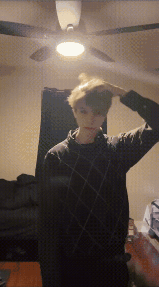
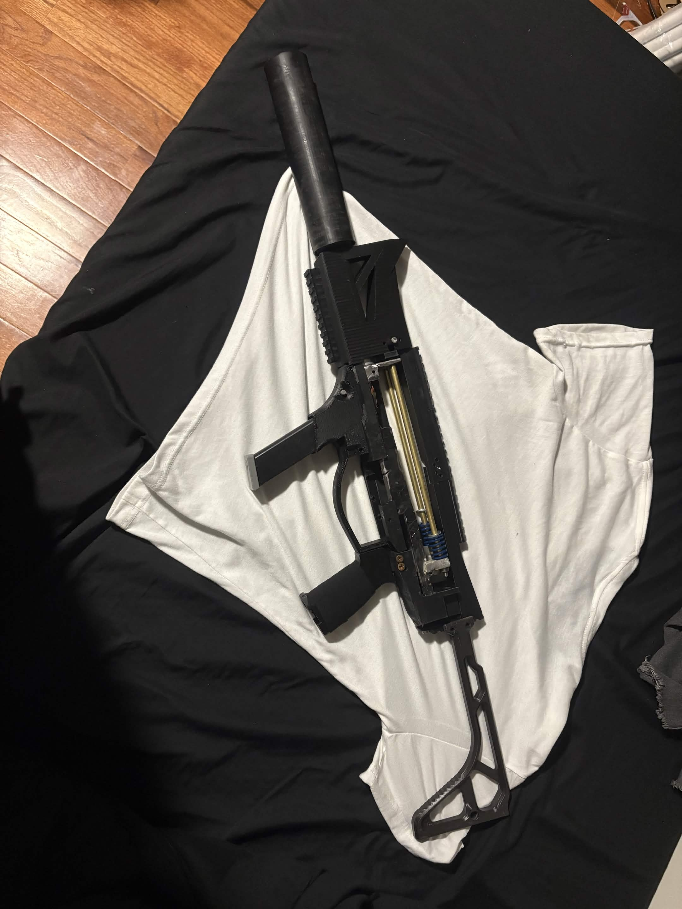
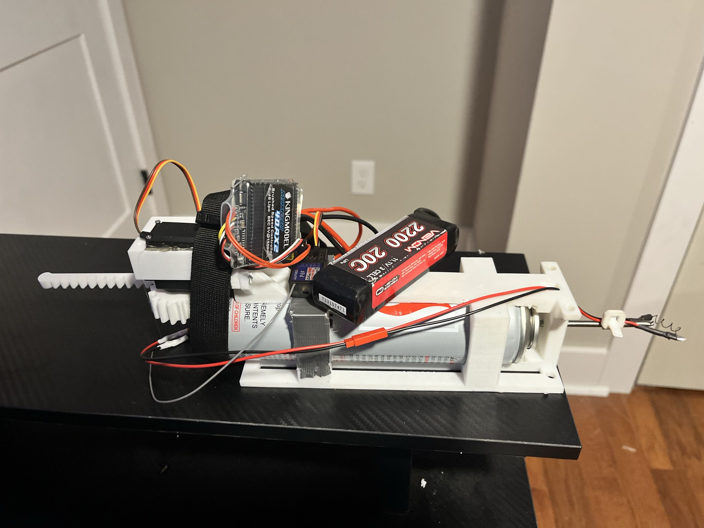

discord ddxoxd / xoddx@proton.me / 773 536 9010
Fabrication, embedded control and reverse engineering. I cut and weld the steel, design and print the parts, build the electronics and write the firmware and control code that runs them. Everything below was taken from nothing to working, mostly from salvage.
Pre-engineering associate's, BCTC. Completing at 17.

Gas pit bike stripped to the bare frame, rebuilt electric, then handed to a controller that rides it with nobody on the seat.

Tuning, flashing and custom firmware for Volkswagen Auto Group cars, tested on my own 2017 A3. Built on top of VW_Flash, where most of the credit goes.

Segmented tail that swings as a pendulum off a single 35kg servo, so the whole spine follows through on its own momentum with no motor per joint.

A CAD and fabrication demonstration piece. Does not fire and is not built to, the barrel is deliberately undersized. Designed as a complete assembly first so travel and clearance could be checked before anything was cut.

Combat robot chassis with a butane ignition payload driven off a rack and pinion that pushes the can forward into a larger nozzle to open it.
Paid repair work on 24V packs for a local mobility centre, including new battery level indicators I retrofitted using ESP32 nanos.
Designed, built and sold to customers, with further commissions on.
Wheel written off as totaled, diagnosed and repaired back to balancing on its own.
Welding steel, cutting plate by hand, grinding and finishing, fixturing for weld distortion
CNC to aluminium, electrochemical machining, drilling and hand fitting
TPU and rigid printing, design for print, bearingless joints, printed enclosures
18650 pack building from salvage, capacity matching, nickel strip spot welding, connector current budgeting
Arduino, ESP32, RPi Pico, IMUs, hall sensors, H-bridges, servos, BLE
CAN and ISO-TP, UDS diagnostics, ECU and module flashing, firmware patching
Python, embedded C, control loops, MuJoCo and Isaac Sim, PPO reinforcement learning
Fusion, AutoCAD, Tinkercad, USD meshes for simulation